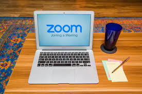

Writer – Michelle Lagos CEO
Teleconferencing, Video conferencing, streaming, and chat tools, are helping teams, colleagues, families, friends, and students conduct business more efficiently during the COVID-19 outbreak. The main question is – Are your communications happening safely? How is video conferencing leaving you vulnerable to security and privacy breaches? What are the risks related to these tools? And how can you use the tools safely while maintaining your privacy?
Security risks
Video conferencing tools like Zoom, Google Hangouts, Microsoft Teams, and WebEx Meetings can make communication easy. They let you see other professionals and students, as well as your doctors, lawyers, colleagues, trainer, friends, and family members on-screen with the click of a button. However, we must remember it can also be a quick click of a button for hackers to also gather all of your data, financial information, passwords, and privacy, if you’re not protected, and watching how your conducting yourself online.
Ease of transmission could also make information easier for cybercriminals to access. It’s a good idea to be aware of the security risks before getting on a video call with your work team, classmates, or even a group of friends.
Most hosted cloud-based conferencing services have advanced security measures, but you still need to set up your teleconferencing tools effectively. That can help keep malware, hackers, and identity thieves out.
PASSWORDS. PASSWORDS. PASSWORDS.
Privacy risks
Your webcam provides a window to your world. What if you mistakenly leave your webcam on? Or what if malicious software like spyware infiltrates your computer and lets a hacker spy on you through that camera? That’s typically not the star-awarding performance you were seeking but it happens… and it’s possible.
Or you might connect remotely to a conference call with unsecure Wi-Fi in a public place like a coffee shop or airport. Hackers may be able to gain access to that call as well.
This raises privacy concerns. If you’re on a company call, legal or financial information — or trade secrets — could be stolen. If you’re talking with your doctor, your sensitive healthcare information could end up in the hands of a cybercriminal who may be trying to get enough information about you to steal your identity to commit identity theft and fraud.
Privacy is another concern. Take Zoom, for example. Zoom’s privacy policy is broad, enabling it to collect and store a wide range of data. It calls this data “customer content.” It includes information in cloud recordings, videos, messages, files, documents shared on screen, and whiteboards shown during its service. Zoom also collects your name if you’re on the call and has a feature known as attention tracking, which alerts a host when you click out of a meeting for more than 30 seconds.

16 tips for using video conference services safely and privately
The privacy and security of a video call might depend on you. If you’re joining that call from an unsecured device or on a Wi-Fi connection that isn’t secure, you could be leaving yourself and your company vulnerable to unauthorized access.
Your goal in video conferencing is secure access. That means preventing unwanted third parties from joining in and gaining access to the data or devices of anyone on the call.
Here’s some tips to help keep your calls more private and secure:
- Follow company policies – If you’re teleworking from home, it’s important to know and follow your company’s policies. If your company, organization, or institution hasn’t established ones thoroughly yet, do bring it to the leadership’s attention, and keep backed-up records of all exchanges and documents.
- BYOD Policy – Many companies have a Bring Your Own Device (BYOD) policy. If you do bring your own device, make sure you’re abiding by that policy and your device is secure.
- Staff Training. Companies often have staff training programs to make sure all employees understand their rules. Stay current on security rules.
- Endpoint Security. Your company should ensure video conference endpoints and platforms have their own managers guarding against suspicious connections.
- Network Security. You and your organization both should take the necessary steps to make sure your network is secure. Your company also must make sure it can handle all of its teleworkers’ devices and communications.
- Ensure your home network security
It’s essential to have a secure home network. Here are a few of the steps you can take to help ensure network security.
- Configure firewalls to keep out unwanted guests.
- Ensure your router is secure. One way to do this is by resetting your default login username and password. Make sure your router has up-to-date, secure encryption like WPA2 or WPA3.
- Review your network settings. Make sure they’re up to date with the latest security patches. Patches fix security flaws that could leave your network vulnerable.
- Use secure Wi-Fi
Make sure your wireless internet connection is secure. Using public Wi-Fi or any internet connection that isn’t secure could leave you vulnerable to eavesdroppers and hackers.
- Set up strong encryption
Be sure to encrypt your teleconference or video call. Encryption scrambles the information so anyone trying to listen in won’t be able to. Encryption makes the communications impossible to understand. It can help prevent malicious third parties having access to your personal data or private video streams.
There are different levels of encryption: a minimum of 128-bit AES to 256-bit AES. Make sure your encryption is set up properly and you haven’t turned it off by mistake.
- Check your settings
To avoid vulnerabilities like the one noted above with Zoom, check your security and privacy settings in the tool. With Zoom, the host of a call can disable those screen-sharing abilities in their pre-meeting setting or in admin controls.
You also can take administrative steps ahead of time. This includes disabling people from joining a call before the host, enabling a co-host, disabling file transfers to avoid sharing viruses, and disabling anyone from joining or rejoining a call once it has started.
- Practice webcam awareness
Cybercriminals may use spyware — malicious software that enables them to spy on you with your webcam. What can you do? Always be aware of your webcam and what it could be exposing.
For instance, you could change your video background so other members of a video call can’t see into your home.
Also, remember to turn off your webcam when your call ends. During meetings, if you don’t need your camera on or if you’re done sharing your part of a presentation, turn off your camera to be safe.
Here’s how to turn off the webcam for your computers and devices:
- Mac computer: Open Safari and go to the Safari Menu > Preferences > Camera and click on “Deny Camera Access” for any and all sites.
- Windows computer: Go to the Start menu and click on Control Panel > Hardware > Sound > Device Manager > Imaging Devices > Webcam > Driver tab and select “Disable.”
- iPhone and iPad: Open the “Settings” app > Privacy > Camera > toggle off camera for any and all apps.
- Android device: Go to the “Settings” app > apps > camera > permissions > click on “Disable” button.
If you don’t want to take these steps to shut off your webcam completely, at least cover your webcam with an opaque piece of tape or paper, or an adhesive sliding webcam cover.
- Set conservative permissions to control access
Setting permissions is important so you can maintain control over who is on the call. If you’re setting up a video call with family members, this could be as simple as requiring everyone to have a password.
Or, instead of using a shared password — which could be easy for an unwanted third party to access — consider having a list of participants (so you know who is on the call) and requiring them each to authenticate to join the call. Companies can set up different access levels for different employees and teams.
- Avoid open meetings
If you want to maintain your privacy, never use an open virtual meeting space. It makes it too easy for cybercriminals to join in.
- Use a SECURE VPN
Setting up a reliable VPN or Virtual Private Network will encrypt your online activities and help ensure the data you send and receive over your Wi-Fi connection is secure.
As a privacy tool, a VPN masks your IP address, location, and search history to prevent things like location tracking.
- Be careful what you share
Always be aware of what you’re sharing. Be sure you aren’t mistakenly sharing sensitive documents during a video call.
- Communicate group expectations.
Video conferencing can be an effective platform for group communication, but it’s important to set privacy expectations with everyone in your group.
It’s a good idea to make sure your team or friends agree on the privacy of your communications and have taken steps to ensure your communications are secure on both ends.
- Engage in effective password management
Always reset your default login credentials and set strong passwords for your router and any devices you’ll use for video conference calls.
For instance, if you’re using your smartphone for a video call for work, make sure you’ve set a strong password for your phone as well — and keep that password private.
Also, lock your devices when they’re not in use.
Your password should be a complex, unique combination of at least 12 uppercase and lowercase letters, numbers, and symbols. Remember to update your passwords regularly, and never use the same password for different accounts.
A password manager can help you set strong passwords. Password managers are software applications that create and store strong passwords with a high level of encryption. This makes your passwords difficult to hack. Plus, you only have to remember one master password.
- Use two-factor or multi-factor authentication
Strong passwords give one layer of protection. You can add another layer by setting up two-factor authentication or multi-factor authentication. Two-factor authentication requires an additional code to sign in to an account. Often, the code is delivered to your smartphone.
- Update programs regularly
Keep your operating system and applications updated, including your video-conferencing app or platform. This will help ensure they have the latest patches to protect against malware and other threats.
It’s a good idea to adjust your device’s setting to automatically update applications when new versions are available.
- Beware of phishing and other online scams
Never click on unknown links or attachments in unsolicited emails — even if they look legitimate. Phishing emails often include links or downloads designed to access sensitive personal information or install malware on your device.
A web link in an email might look like it’s legitimate, or look like it’s from someone you know, but be careful. It’s smart to always go directly to the secure website, which will have “HTTPS://” and a padlock in the address bar.
If you have malware on any device you’re using for video conferencing, it could make you and other members of the group vulnerable to security and privacy threats.
- Install security software
It’s important install and run strong security software on all your devices. It can help give you protection and peace of mind while connecting online with the outside world.
Bottom line: Video conferencing can help bring people together when face-to-face meetings aren’t possible. But it’s smart to take steps to help make sure your devices and data are protected.